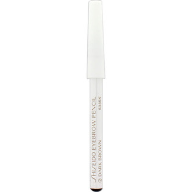
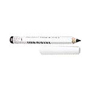

返回列表
产品名称：眉墨鉛筆ダークブラウン

資生堂 眉墨鉛筆ダークブラウン ２
メーカー 資生堂
JANコード 4901872353620
商品の特徴
適度な芯の硬さで描きやすく、自然な眉に仕上げるアイブローペンシルです。
成分・分量
【成分】
ステアリン酸、モクロウ、ラノリン、水添ヒマシ油、スクワラン、トコフェロール、酸化鉄
用法及び用量
【使用方法】
・眉墨鉛筆の先で、眉毛の薄い部分を１本１本足すように描きます。